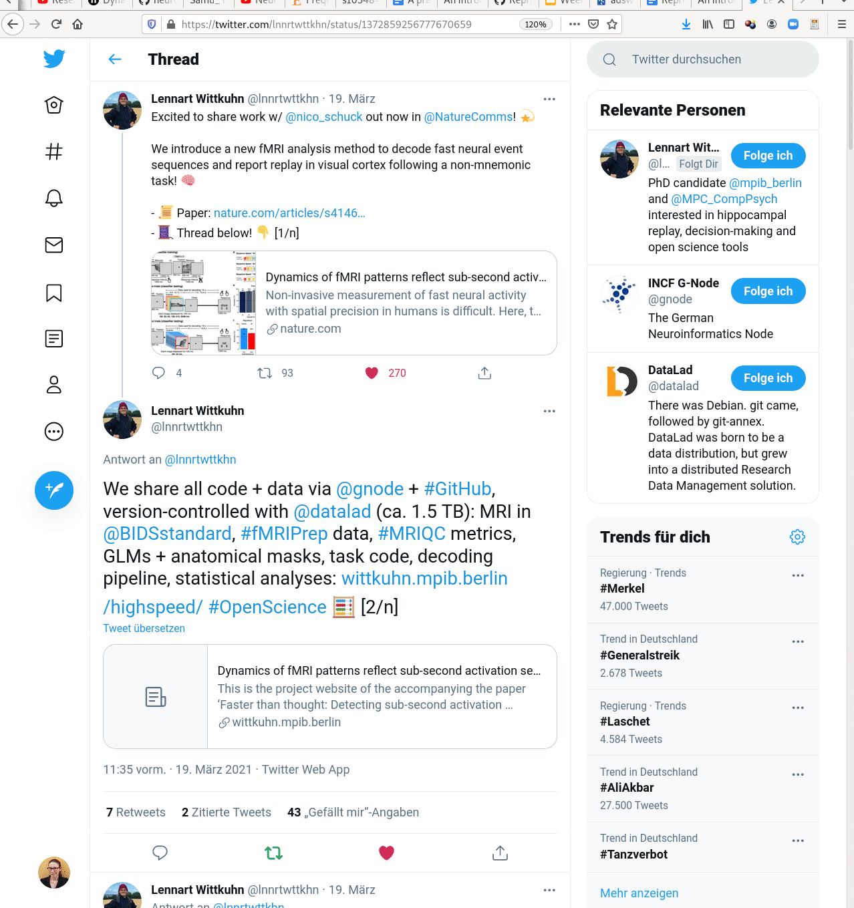

Data Management
|
Adina Wagner
 @AdinaKrik
@AdinaKrik |
|
|
Psychoinformatics lab,
Institute of Neuroscience and Medicine, Brain & Behavior (INM-7) Research Center Jülich ReproNim/INCF fellow |


|
|
Slides: DOI 10.5281/zenodo.4541323 (Scan the QR code) Sources: ZENODO DOI |
- A command-line tool, available for all major operating systems (Linux, macOS/OSX, Windows), free & open source
- Build on top of Git and Git-annex
- Main features:
- Version control for arbitrarily large content
- version control data and software alongside to code!
- Transport logistics for sharing and obtaining data
- consume and collaborate on data (analyses) like software
- Computationally reproducible data analysis
- Track and share provenance of all digital objects
- Completely domain-agnostic
Version Control
- DataLad knows two things: Datasets and files
- A DataLad dataset is a Git repository:
- keep track of changes
- revert changes or go back to previous states
- collect and share digital provenance


Version Control: Data
- Datasets have an optional annex for (large or sensitive) data (or text/code).
- Identity (hash) and location information is put
into Git, rather than file content. The annex, and transport to and from
it is managed with git-annex
(git-annex.branchable.com)
→ decentralized version control for files of any size. - DataLad works towards wrapping Git and git-annex into a non-complex core-API (helpful for data management novices).
- Flexibility and commands of Git and git-annex are preserved (useful for experienced Git/git-annex users).
Version Control: Nesting
- Link datasets as "dependencies":

- hierarchies of datasets in super-/sub-dataset relationships
- ✓ Scalability
adina@bulk1 in /ds/hcp/super on git:master❱ datalad status --annex -r
15530572 annex'd files (77.9 TB recorded total size)
nothing to save, working tree cleanTransport logistics
- Share datasets easily
- Datasets can be "cloned", "pushed", and "updated" from and to local paths, remote hosting services, cloud services, ...


Transport logistics
- Disk-space aware workflows: Cloned datasets are lean:
$ datalad clone git@github.com:datalad-datasets/machinelearning-books.git
install(ok): /tmp/machinelearning-books (dataset)
$ cd machinelearning-books && du -sh
348K .$ ls
A.Shashua-Introduction_to_Machine_Learning.pdf
B.Efron_T.Hastie-Computer_Age_Statistical_Inference.pdf
C.E.Rasmussen_C.K.I.Williams-Gaussian_Processes_for_Machine_Learning.pdf
D.Barber-Bayesian_Reasoning_and_Machine_Learning.pdf
[...]$ datalad get A.Shashua-Introduction_to_Machine_Learning.pdf
get(ok): /tmp/machinelearning-books/A.Shashua-Introduction_to_Machine_Learning.pdf (file) [from web...]$ datalad drop A.Shashua-Introduction_to_Machine_Learning.pdf
drop(ok): /tmp/machinelearning-books/A.Shashua-Introduction_to_Machine_Learning.pdf (file) [checking https://arxiv.org/pdf/0904.3664v1.pdf...]Interoperability
- DataLad is built to maximize interoperability and use with hosting and storage technology

Interoperability
- DataLad is built to maximize interoperability and use with hosting and storage technology

Provenance capture
- Datasets can capture dataset transformations and their cause in order to track the entire evolution and lineage of files in datasets

- "How did this file came to be?", "What steps were undertaken to transform the raw data into the published result?", "Can you recompute this for me?"
Provenance capture
- Basic provenance: DataLad can capture arbitrary dataset transformations (e.g., from computing analysis results) and record the cause of such a change
$ datalad run -m "Perform eye movement event detection"\
--input 'raw_data/*.tsv.gz' --output 'sub-*' \
bash code/compute_all.sh
-- Git commit -- Michael Hanke < ... @gmail.com>; Fri Sep 21 22:00:47 2019
[DATALAD RUNCMD] Perform eye movement event detection
=== Do not change lines below ===
{
"cmd": "bash code/compute_all.sh",
"dsid": "d2b4b72a-7c13-11e7-9f1f-a0369f7c647e",
"exit": 0,
"inputs": ["raw_data/*.tsv.gz"],
"outputs": ["sub-*"],
"pwd": "."
}
^^^ Do not change lines above ^^^
---
sub-01/sub-01_task-movie_run-1_events.png | 2 +-
sub-01/sub-01_task-movie_run-1_events.tsv | 2 +-
...Provenance capture
- Computational provenance: Datasets can track software containers, and perform and record computations inside it:
$ datalad containers-run -n neuroimaging-container \
--input 'mri/*_bold.nii --output 'sub-*/LC_timeseries_run-*.csv' \
"bash -c 'for sub in sub-*; do for run in run-1 ... run-8;
do python3 code/extract_lc_timeseries.py \$sub \$run; done; done'"
-- Git commit -- Michael Hanke < ... @gmail.com>; Fri Jul 6 11:02:28 2019
[DATALAD RUNCMD] singularity exec --bind {pwd} .datalad/e...
=== Do not change lines below ===
{
"cmd": "singularity exec --bind {pwd} .datalad/environments/nilearn.simg bash..",
"dsid": "92ea1faa-632a-11e8-af29-a0369f7c647e",
"inputs": [
"mri/*.bold.nii.gz",
".datalad/environments/nilearn.simg"
],
"outputs": ["sub-*/LC_timeseries_run-*.csv"],
...
}
^^^ Do not change lines above ^^^
---
sub-01/LC_timeseries_run-1.csv | 1 +
...Provenance capture
- All recorded transformations can be re-computed automatically
$ datalad rerun eee1356bb7e8f921174e404c6df6aadcc1f158f0
[INFO] == Command start (output follows) =====
[INFO] == Command exit (modification check follows) =====
add(ok): sub-01/LC_timeseries_run-1.csv (file)
...
save(ok): . (dataset)
action summary:
add (ok: 45)
save (notneeded: 45, ok: 1)
unlock (notneeded: 45)
...- Aid with the reproducibility of a result and verify it (via content hash)
- Use complete capture and automatic re-computation as alternative to storage and transport
Examples of what DataLad can be used for:
- Publish or consume datasets via GitHub, GitLab, OSF, or similar services

Examples of what DataLad can be used for:
- Behind-the-scenes infrastructure component for data transport and versioning

Examples of what DataLad can be used for:
- Creating and sharing reproducible, open science: Sharing data, software, code, and provenance 
Examples of what DataLad can be used for:
- Central data management and archival system

Examples of what DataLad can be used for:
FAIRly big: A framework for computationally reproducible
processing of large-scale data
(doi.org/10.1101/2021.10.12.464122)

Further Information
- User documentation & tutorials: handbook.datalad.org
- Source code, issue tracker: github.com/datalad/datalad
- Technical docs: docs.datalad.org
- Video tutorials: www.youtube.com/datalad
- User support: DataLad Matrix Channel
- "DataLad Office Hour" (weekly): DataLad Office Hour Matrix Channel
Use it on Hilbert:
module load dataladAcknowledgements
|
Funders


Collaborators
|